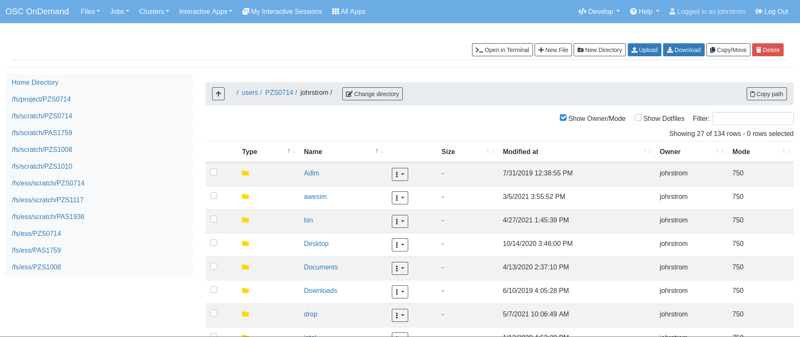

v2.0 Release Notes
Warning
There are some breaking changes in 2.0. See the upgrade directions below for details.
Highlights in 2.0:
Pinned Apps: Enhanced app launch interface using large app icons on the dashboard
Tighter integration between the Dashboard, Active Jobs, and Files apps
Control whether an app link opens in a new window using manifest attribute
Upgrading to v2.0.29
Major Changes
Require NodeJS 14
NodeJS 14 is now required as NodeJS 12 is currently End-Of-Life.
Upgrade directions
sudo yum update ondemand
sudo dnf module reset nodejs
sudo dnf module enable nodejs:14
sudo dnf update ondemand
wget -O /tmp/ondemand-release-web_2.0.1_all.deb https://apt.osc.edu/ondemand/2.0/ondemand-release-web_2.0.1_all.deb
sudo apt -o Dpkg::Options::="--force-confnew" install /tmp/ondemand-release-web_2.0.1_all.deb
sudo apt update
sudo apt install --only-upgrade ondemand
Upgrading from v1.8
Breaking Changes
No longer providing ood_auth_map.regex
2.0 no longer provides /opt/ood/ood_auth_map/bin/ood_auth_map.regex, the 1.8- default
user_map_cmd in ood_portal.yml.
Most sites should be able to use user_map_match instead. You can still use
user_map_cmd, only you'll have to write your own in a language of your choice.
Warning
lua patterns may not be sufficient because they are not regular expressions. For example
they do not support boolean OR | operators. If you need such functionality you may
find python, perl, ruby (SCL or system installed) or even bash commands that suite your
needs.
See the documentation on user_map_match for more information on it.
SCL Ruby no longer available to apache
Related to the ood_auth_map.regex change above, apache no longer relies on the SCL version
of Ruby. This means that Ruby 2.7 is unavailable to apache and consequently any user_map_cmd
you employ.
Should you need Ruby 2.7 in any commands or scripts that apache calls, the best mitigation is
to employ a wrapper script that can load rh-ruby27.
App sharing landing page
If your site has enabled app sharing through OOD_APP_SHARING the dashboard's landing page will
no longer show these app icons by default.
Your site will need to use the pinned apps feature to have the same look as 1.8.20-. Here is the relevant configuration you'll need to provide to have a comparable landing page layout.
# /etc/ood/config/ondemand.d/ondemand.yml
pinned_apps:
- 'usr/*'
pinned_apps_group_by: 'category'
See the documentation on pinning apps to the dashboard for more details.
Ruby and bundler updates
Open OnDemand 2.0 now uses Ruby 2.7, up from 2.5. If you have Passenger apps that have been built against 2.5, these will need to be rebuilt against 2.7.
This release also updates bundler to 2.1.4, up from 1.17.3. These versions are incompatible with each other, so passenger apps will also need to update their bundler dependencies.
ActiveJobs configuration changes
Because ActiveJobs is now integrated with the Dashboard app, configuration files are no longer
being read from /etc/ood/config/apps/activejobs.
If you have initializers here in this directory, they need to move to
/etc/ood/config/apps/dashboard/initializers. Similarly views, if any,
need to move to /etc/ood/config/apps/dashboard/views.
If you used the class Filter to add or modify the filter menus in an initializer,
this now needs to be ActiveJobs::Filter.
Files app configuration changes
Because Files app is now integrated with the Dashboard app, configurations
in /etc/ood/config/apps/files need to move to /etc/ood/config/apps/dashboard for
them to take effect.
The use of the environment variable OOD_SHELL to hide the Terminal button has been deprecated
and can now be set with the files_enable_shell_button parameter in the /etc/ood/config/ondemand.d/*.yml file.
Changes to the interactive cards
The interactive sessions cards have changed with the bootstrap 4 upgrade. If your site uses complex logic in your view.html.erb you may have to change that. Here are the two changes that may affect your site.
The
panelCSS classes no longer exist. These have been replaced bycard. Here are examples in both plain JavaScript and jQuery of what you may have and how it would need to change.
// there is no closes panel to this element anymore. This won't work, because
// there are no elements with a 'panel' css class.
document.getElementById("someElementId").closest(".panel").id;
// search for the closest element with a card class instead
document.getElementById("someElementId").closest(".card").id;
// the same thing in jquery
$("#someElementId").closest(".card")[0].id
The
idof the card divs has changed to prependid_to them to fix some issues in Bootstrap-4. So if you use<%= session_id >to query for elements you will either need to prependid_to that or change the query to look for thedata-idattribute of a div.Note
<%= session_id >doesn't work directly. You would need to pass it back through theconn_paramsfor it to be usable in this view.
// searching for cards like this will no longer work because the id of the cards has changed.
document.getElementById("<= session_id >");
$("#<= session_id >"); // same thing in jquery
// you will now have to prepend the string 'id_' to them
document.getElementById("id_<= session_id >");
$("#id_<= session_id >"); // same thing in jquery
// the original session id is still stored in the attribute data-id, so this
// works in jquery
$("div[data-id='<%= session_id >']")
Upgrade directions
Warning
As always please update the development or test instances of OnDemand installed at your center first to test and verify before you modify the production instance.
Warning
The OnDemand upgrade has only been tested going from 1.8.x to 2.0.x.
Update OnDemand release RPM
sudo yum install -y https://yum.osc.edu/ondemand/2.0/ondemand-release-web-2.0-1.noarch.rpm
Enable dependency repositories
CentOS/RHEL 8 only
sudo dnf module reset ruby sudo dnf module enable ruby:2.7 sudo dnf module reset nodejs sudo dnf module enable nodejs:12
RedHat 8 only
sudo subscription-manager repos --enable codeready-builder-for-rhel-8-x86_64-rpms
CentOS 8 only
sudo dnf config-manager --set-enabled powertools
CentOS/RHEL 7 only
sudo yum install epel-release
Update OnDemand
sudo yum clean all sudo yum update ondemand
(Optional) If using Dex based authentication, update the
ondemand-dexpackage.sudo yum update ondemand-dex
Update Apache configuration and restart Apache.
sudo /opt/ood/ood-portal-generator/sbin/update_ood_portalCentOS/RHEL 8 only
sudo systemctl try-restart httpd
CentOS/RHEL 7 only
sudo systemctl try-restart httpd24-httpd.service
(Optional) If
ondemand-dexwas installed, restart theondemand-dexservice.sudo systemctl try-restart ondemand-dex.service
(Optional) If
ondemand-selinuxwas installed, see SELinux after UpdatesForce all PUNs to restart
sudo /opt/ood/nginx_stage/sbin/nginx_stage nginx_clean -f
(Optional) Remove old dependencies from prior versions of OOD if they are not used by other applications.
Warning
See Dependency updates warning before uninstalling old Ruby versions.
CentOS/RHEL 7 only
sudo yum remove rh-ruby25\* rh-nodejs10\*
Details
Pinned Apps: Enhanced app launch interface using large app icons on the dashboard
As the number of apps increases and the sophistication of the typical user decreases - now including even undergraduate students using OnDemand in the classroom - it has become desirable to be able to present only a small subset of the apps that are relevant for a particular user.
2.0 now allows sites to pin a grid of application icons to the dashboard for easy access and to a subset of apps that you want to feature. The grid layout of application icons is meant to give users a desktop look and feel to the dashboard.
There are several strategies available to choose which apps to pin. For example, metadata in the app manifests could specify a field_of_science attribute, and then the pinned apps could be configured to display all apps with the field_of_science being "Biology". The configuration for pinned apps can be made dynamic using ERB so it can be changed based on which user or group is accessing the dashboard. Pinned apps can also further be grouped by a particular attribute.
See the documentation on pinning apps to the dashboard for details.
Custom dashboard widgets and layout
See the documentation on customizing dashboard layouts for details.
Adding metadata to app manifests
App manifest files now allow for metadata fields for grouping and display in the all apps table. See documentation on manifest files for more details.
Shell app now has themes
The shell app now allows for users to choose a color theme other than the default and ships with thirteen extra themes.
Configurations in an ondemand.d directory
We've added an ondemand.d directory to start moving configurations there. Some new features for 2.0 rely on configurations read from files in this directory.
See the documentation for the ondemand.d configurations for all the available configurations.
Tighter integration between the Dashboard, Active Jobs, and Files apps
In OnDemand 1.8, the Dashboard, Active Jobs, Files, and File Editor apps were all served by separate Passenger application processes. These are all now served by a single Passenger application process per user.
This change has the following effects:
The URL has changed, but redirects from the old URLs should still work for backwards compatibility.
The navbar and branding across the dashboard is visible in Active Jobs and File Editor
the Active Jobs and Files apps both load without opening a new window
the Active Jobs and Files apps load much faster than before
Warning
Configuration for Active Jobs and Files apps have changed slightly and need to be updated for 2.0. See Breaking Changes above for details.
New File Manager app
The Files app in 1.8 was a fork of https://github.com/coderaiser/cloudcmd that was difficult to maintain. The new Files app is rewritten in Ruby and integrated into the Dashboard app. The look and feel has been updated to use Bootstrap 4 and the OnDemand navbar displays above the interface.
New features:
Modified at column now shows date and time
Columns are sort-able by size, date, name, type, etc.
Owner column displays the actual username instead of just the UID
Uploads now managed with
Uppy.jswhich provides a preview window prior to uploading filesCopy path button provides easy way to copy the current directory path to clipboard
Copy, Move, and Delete events now log details of the action requested in the per user NGINX logs
Copy, Move workflow includes a new visual display of the files selected to copy or move
Filter box to filter the list of files by inserted text
Changes:
The left hand navigation tree is replaced with a list of the file location shortcuts
Instead of a ".." row to navigate up, there is an "up" button to the left of the path
Buttons that apply to only one file or directory were moved to a button drop-down to the right of each filename
"Change directory" button replaced "Go to" button
Open in Terminal now displays split drop-down button to ssh to any available login host without any extra configuration required. Previously this was done by setting an SSH_HOSTS environment variable.
See the files app configuration changes for any changes you'll need to update to the configurations of this new app.

Changes in All Apps page layout
The 'All Apps' page is now a filterable table instead of cards. Note that new columns will be dynamically added by adding metadata to app manifests.
ERB formats for Message of the day
The message of the day text and markdown formats now support ERB rendering for a more dynamic message being rendered. See the documentation on Message of the Day for more information.
Control whether an app link opens in a new window using manifest attribute
In 1.8, all links to apps that are separate Passenger processes open in a new window or tab. The rationale for this was that these apps do not share the navigational context with the Dashboard app - in particular the navbar is not present.
By adding to the manifest.yml new_window: false the app is indicating it provides enough navigational context for the user
to not get lost and the Dashboard will not open in new window.
This feature is used by the Files and Active Jobs apps in 2.0.
Memcached Ruby gem available for use in apps
The dalli Ruby gem for interfacing with memcached can now be used in batch connect apps though it needs
to be explicitly required using a custom initializer or in the form or submit.yml.erb files.
Dependency updates
This release updates the following dependencies:
Ruby 2.7
NodeJS 12
Passenger 6.0.7
NGINX 1.18.0
Warning
The change in Ruby version means any Ruby based apps that are not provided by the OnDemand RPM must be rebuilt.